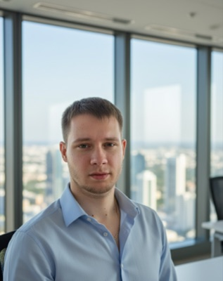

Vladyslav Maksymov
Założyciel i lektor angielskiego
Sam uczył się angielskiego jako języka obcego i wie, jak trudno przejść od rozumienia do mówienia. LAM English założył, bo widział ten sam problem u wielu dorosłych: wszyscy uczą się angielskiego, ale mało kto naprawdę mówi.

Zespół lektorów
Kursy grupowe i lekcje 1:1
Nasi lektorzy przeszli tę samą drogę co Ty — od rozumienia do swobodnej rozmowy. W razie potrzeby wytłumaczą trudniejsze rzeczy po polsku, angielsku, rosyjsku lub ukraińsku.
Uczysz angielskiego?
Dołącz do zespołu
Szukamy lektorów, którzy lubią rozmawiać i pomagać innym przełamać blokadę. Sprawdź aktualne oferty.